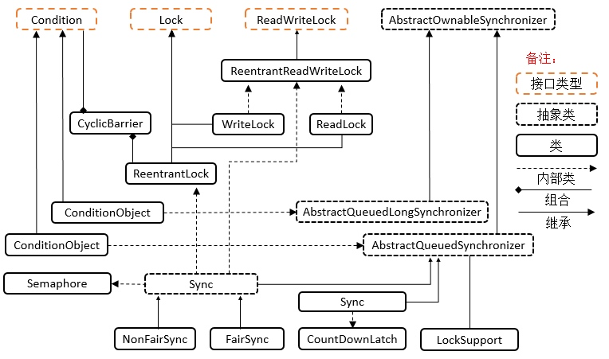

Lock 与 AQS 工具类关系
锁是用于通过多个线程控制对共享资源的访问工具。通常锁提供对共享资源的独占访问，但是一些锁可能允许并发的访问共享资源，例如ReadWriteLock的读锁。
问:java中有了synchronized，为什么又会出现java显式锁呢？
Lock实现提供比使用synchronized方法可以获得更灵活、更广泛的锁定操作。
使用 synchronized 方法或语句提供对每个对象相关联的隐式监视器锁访问，但是强制所有锁获取和释放以块的结构方式发生，当获取多个锁的时候，他们必须以相反的顺序被释放，并且所有的锁都必须被释放在与他们相同的词汇范围内。
lock的使用应使用如下的惯用写法:
Lock l = ...;
l.lock();
try{
// 访问被此锁保护起来的相关资源
} finally{
l.unlock();
}
Lock 接口理解：
public interface Lock {
// 枷锁获得锁资源
void lock();
// 尝试获得锁，如果当前线程被调用了interrupted则中断，并抛出异常，否则就获得锁
void lockInterruptibly() throws InterruptedException;
// 判断能否获得锁，如果能获得，则获得锁，并返回true(此时已经获得了锁)
boolean tryLock();
// 保持给定的等待时间，如果期间能拿到锁，则获得锁，同样如果期间被中断，则抛异常
boolean tryLock(long time, TimeUnit unit) throws InterruptedException;
// 解锁，释放锁资源
void unlock();
// 获取等待通知组件，该组件与当前锁绑定，当前线程只有获得了锁，才能调用该组件的wait()方法，而调用后，当前线程将释放锁。
Condition newCondition();
}